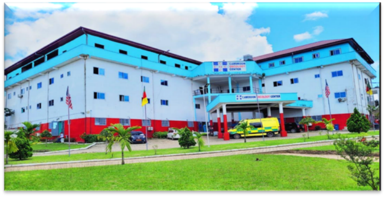
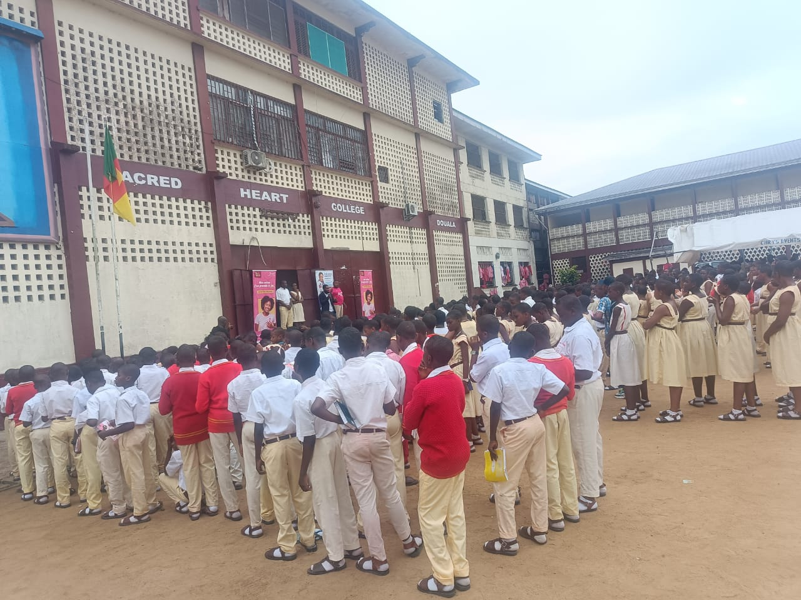
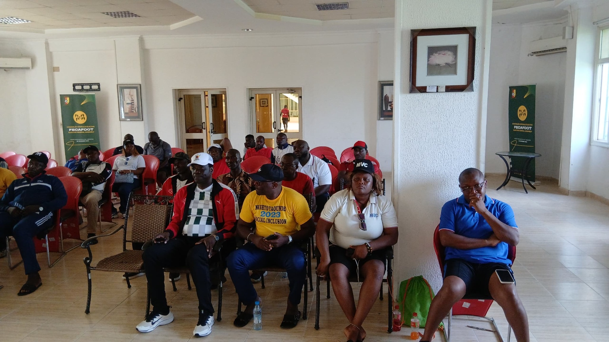
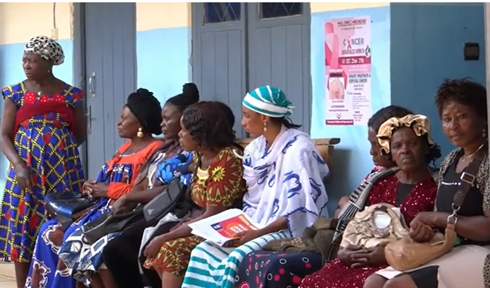

Preventing cancer, detecting it earlier and helping patients reach treatment - across Cameroon.
Prévenir le cancer, le détecter plus tôt et aider les patients à accéder au traitement - partout au Cameroun.
CCF is a Cameroonian nonprofit working through cancer education, free screening and early detection, treatment assistance, capacity building and research.
Founded by Professor Paul N. Mobit, CCF works with the Cameroon Oncology Center as its technical and clinical partner.
Discover CCFLa CCF est une organisation camerounaise à but non lucratif engagée dans l'éducation sur le cancer, le dépistage gratuit et la détection précoce, l'aide au traitement, le renforcement des capacités et la recherche.
Fondée par le Professeur Paul N. Mobit, la CCF travaille avec le Cameroon Oncology Center comme partenaire technique et clinique.
Découvrir la CCF


